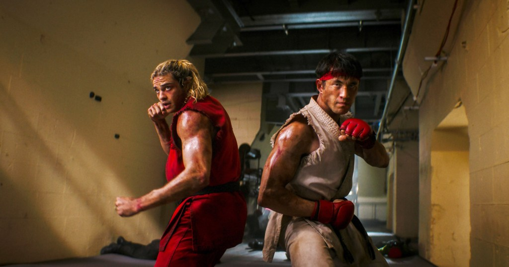
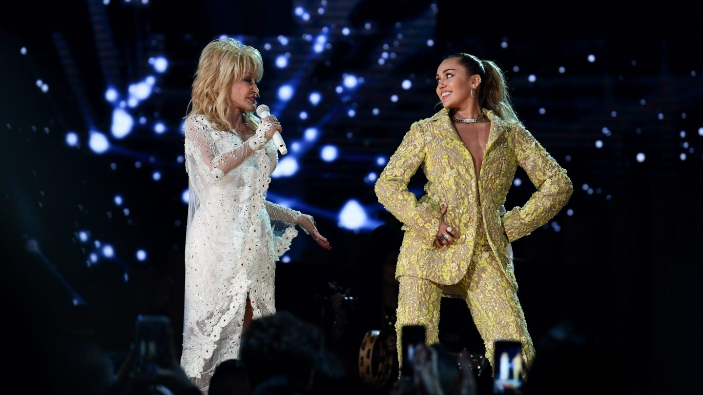
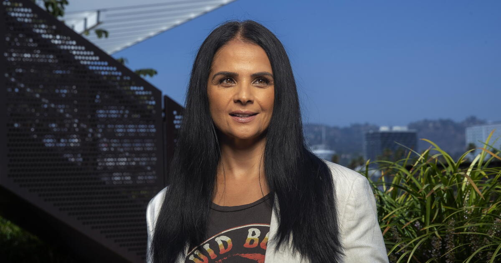
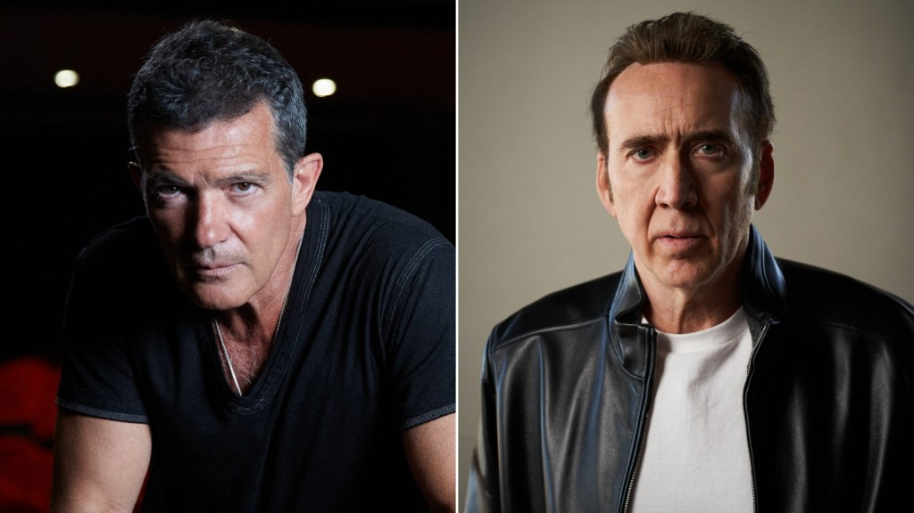

Street Fighter wins the weekend, but Nathan Fielder’s Elizabeth Holmes documentary is the real story

Paramount/Legendary’s Street Fighter took $12.5 million Friday at 3,575 theaters and is heading for about $30 million, the low end of expectations for a movie with an $82 million net budget. Audiences gave it a B- CinemaScore; it sits at 47% with Rotten Tomatoes critics and 80% with audiences.
The bigger surprise is A24’s You Can See Everything, Nathan Fielder and Lance Oppenheim’s 174-minute Elizabeth Holmes documentary. It made $5.3 million Friday from about 885 theaters and is heading for about $12 million, with a 99% Rotten Tomatoes audience score. Deadline says that’s the second-best documentary opening ever behind Fahrenheit 9/11 ($23.9 million), not counting concert films, and ahead of Chimpanzee ($10.6 million) and Melania ($7.1 million).
Elsewhere, Whalefall is flopping with $6–7 million against $11 million tracking, and Sense & Sensibility is looking at about $6 million.
 Street Fighter trailer on YouTube →
·
Street Fighter trailer on YouTube →
·
 You Can See Everything trailer on YouTube →
·
You Can See Everything trailer on YouTube →
·
 Deadline →
Deadline →
Miley Cyrus breaks down singing “Jolene” for Dolly Parton at the Hollywood Bowl

Cyrus broke down singing “Jolene” Friday at the first of her two Hollywood Bowl shows (the second is Sunday). She projected a photo of her godmother, Dolly Parton, who died Aug. 25 at 80 after a brief battle with cancer.
She told the crowd about the one time she watched Dolly play the Bowl from the seats: Dolly opened with “The Best of Both Worlds” and announced that her goddaughter was there. “Me and Dolly, we are eternal… I’m gonna see her again,” Cyrus said. She later held a heart-shaped photo of Dolly during “Wrecking Ball.” Selena Gomez was in the audience.
The shows follow her new album, Bass Persuades, out Sept. 18.
Netflix replaces content chief Bela Bajaria with Peter Rice

Peter Rice, the former chairman of Walt Disney Television and before that a longtime Fox and Fox Searchlight executive, becomes Netflix’s chief content officer starting Oct. 26. Bajaria leaves after about 10 years, a day after Netflix cut roughly 1,000 jobs.
The shake-up comes as hits and engagement growth slow and the stock is down about 40% from a year ago, per the L.A. Times. In a memo, Ted Sarandos said Rice would take the slate “to the next level,” especially in the U.S. and Canada.
Antonio Banderas joins Nicolas Cage in True Detective Season 5

Cage plays Henry Logan and Banderas plays Rai García in the next season of HBO’s anthology, set in Jamaica Bay, New York.
Issa López returns as showrunner after Night Country and has hinted at “important connections” to that season. Production starts in 2027.
Bottom of the news
- Sony is weighing a same-day April 2028 release for all four of Sam Mendes’s Beatles films, with combined box office reporting and four-pack tickets (The Hollywood Reporter).
- Paramount has acquired Red Rising and set Francis Lawrence to direct.
- Zach Bryan and Lana Del Rey’s “Lies” went No. 1 on U.S. Apple Music, Lana’s first.
- Tate McRae’s “Housewife” hit No. 2 on global Apple Music.
- Smashing Pumpkins reunited with Butch Vig on “Black Stars” for the Hunger Games: Sunrise on the Reaping soundtrack.
- Kim Kardashian says she’d do Dancing With the Stars again if the whole family joined.
- The Nobody Wants This Season 3 soundtrack, out Oct. 23, includes unreleased Miley Cyrus songs.